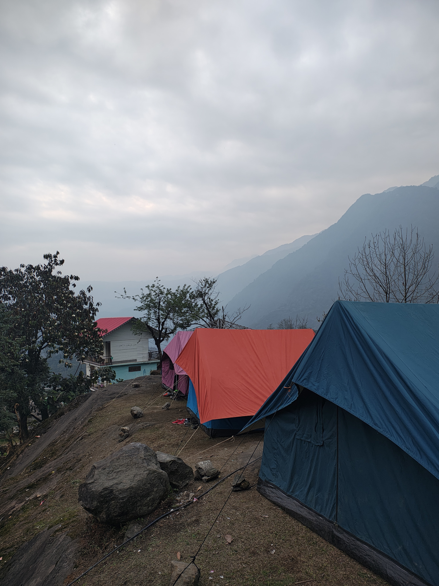
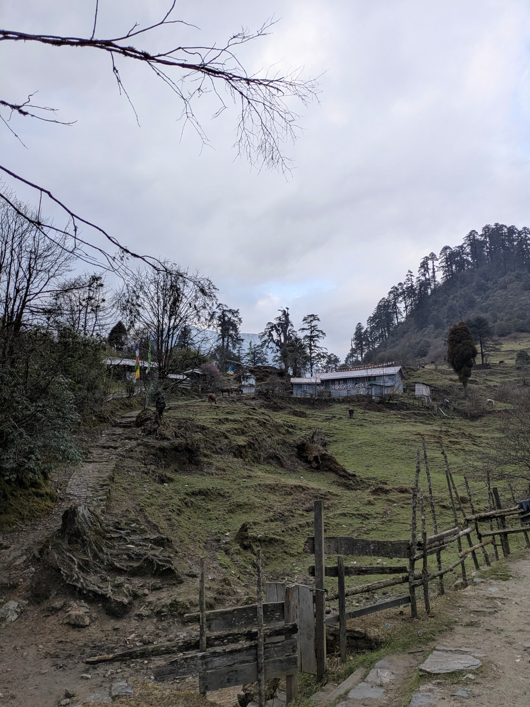
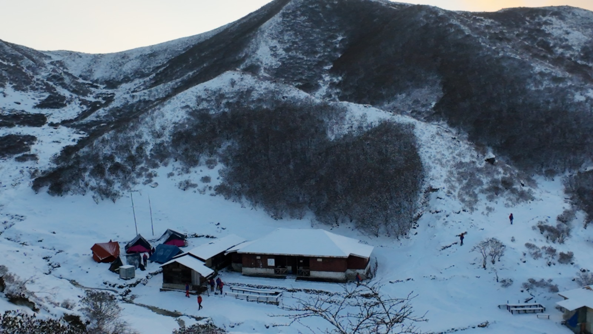
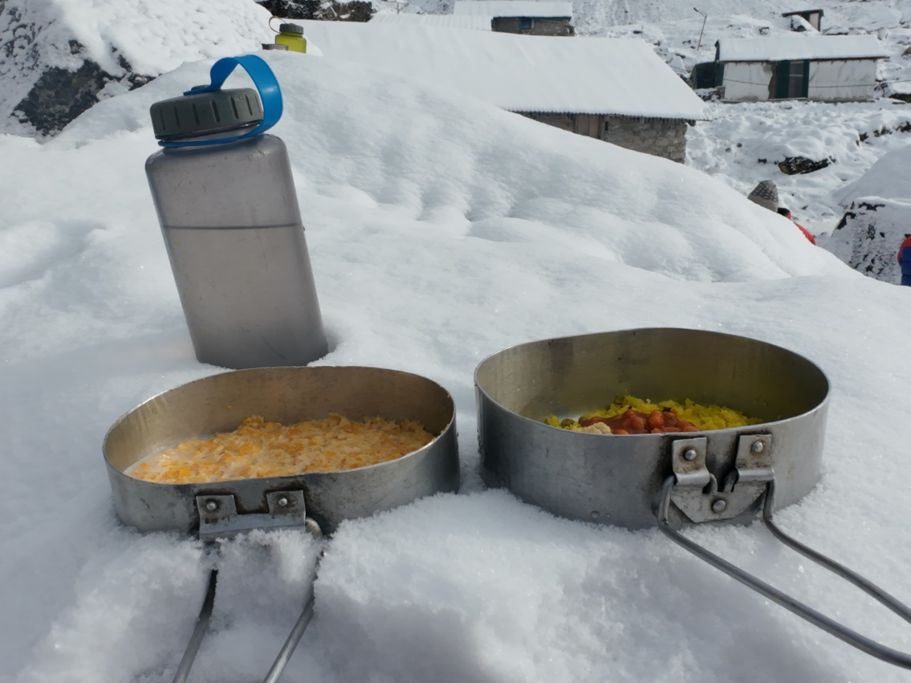
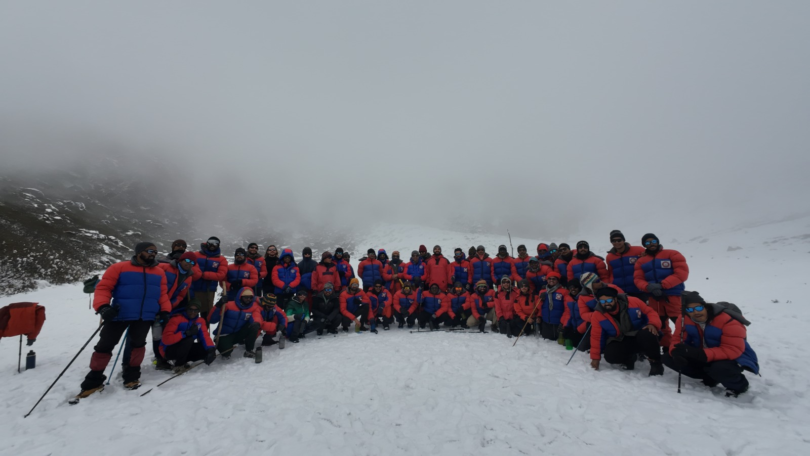
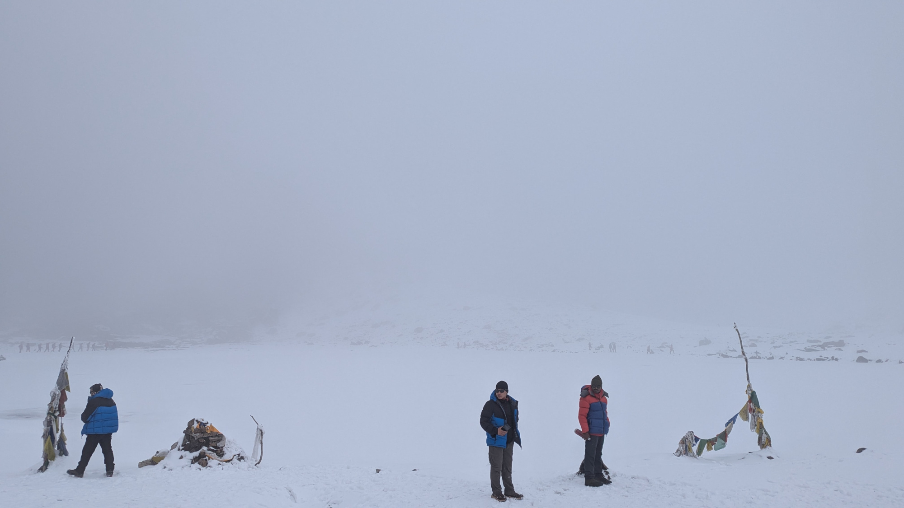
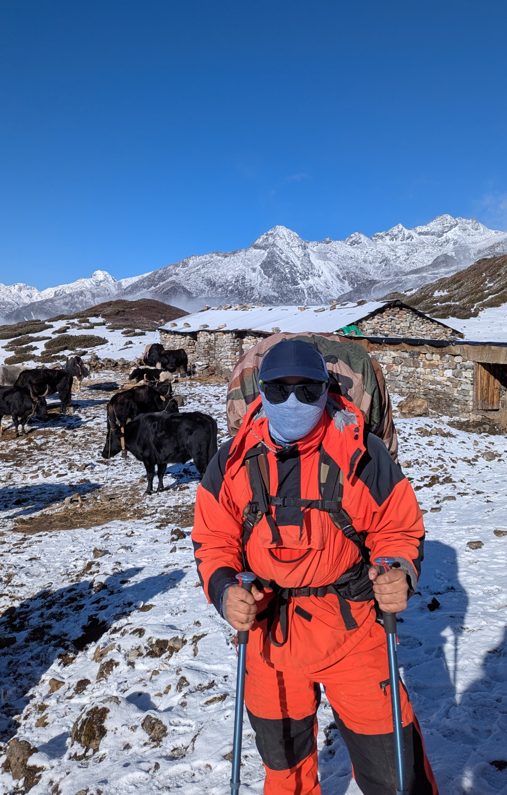
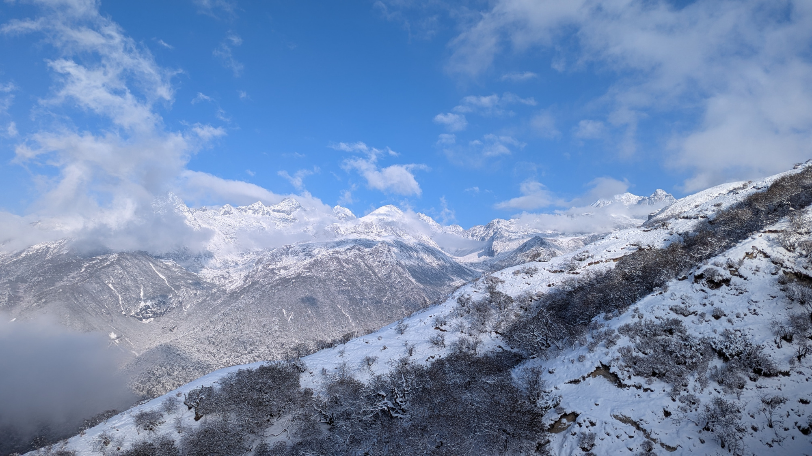
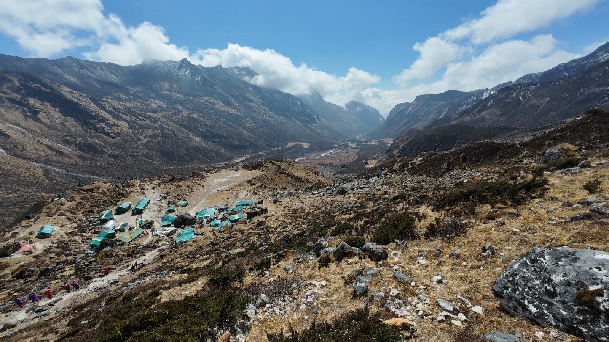

Hike to Base Camp - BMC Part 2¶
This section will describe the hike from the institute to the base camp.
It will include details about the route, the challenges faced, acclimatization, and group dynamics during the trek.
Hike plan¶
The basecamp is at 14,600 feet. The hike to the basecamp is done in 3 steps. This is done so that we can get acclimatized to the increase in the altitude properly.
Here is the trail plan in detail
- Yuksom (1790 m) to Tshoka (3000 m) Distance: 15.5 km
- Tshoka to Dzongri (4000 m) Distance: 6.5 km
- Dzongri to Chowrikhang (4500 m) Distance : 9.6 km
Ride to Yuksom¶
Our trek to the basecamp started with a car-ride to the last roadhead. This is a place called Yuksom. Yuksom used to be the first capital of Sikkim. The ride from HMI to Yuksom was easy. We were given motion sickness tablets which really helped. The roads were okay for the most part, though some sections in the middle were absolutely terrible. It was a pleasant ride overall.
Our car was the last one to arrive and by then other teams had already started pitching their tents. We followed suit and soon, we had a 6 person tent for ourselves. Pitching the tent was a challenge because none of the tents had any pegs. We ended up pulling stones from random places and typing the guy-lines to these stones. Things were really stable once we were done.

After lunch we went for a short walk to a local shrine called Norbugang Chorten. It is said that the first monarch of Sikkim was crowned here. The name Yuksom comes from this event too. Yuksom literally means meeting place of the three learned monks. These monks came together and selected Phuntsog Namgyal as the first Chogyal (or Religious King) of Sikkim.
There was a shop near our camp grounds which was serving fancy-food; i.e. things like momos and packed goods. Some of us picked up rations for the climb. I didn't bother. I wanted this experience to be as raw as possible. I mean I will get to be a BM trainee at HMI for the first time only once; no point in diluting the experience (yeah!, I romanticize random things like this :P ).
We were given a kilo to dry-fruits and sweets. This would be our "trail-mix" for the rest of the course. The weather predictions showed that we would get rainfall / snowfall. Bad weather scares me until I am exposed to it. Once I am exposed to bad weather, I am OK. Needless to say, I was very scared / worried.
I assumed that this would be the last place where I would get a stable mobile connection, so I said my goodbyes and switched off the phone. I did not want this experience to have the distraction of a mobile phone.
Dinner was served in the dark and we settled in for the night after washing our mess-kits. The mess-kits would be our utensils for the entire 2 weeks from now.
Yuksom to Tshoka¶
Today was the longest hike of the entire course. We clocked in a respectable 16 km and gained about 1200 m in elevation. The trail was actually very prominent and we did not have any trouble finding our way. This trail is a very common hiking route which leads to the famous Goecha-La trek. The route till Dzongri is the same; after which we go into the Rathong Valley.
We had hot breakfast at the camp and we carried dry food for our lunch. Today we would be crossing four bridges on our way and we were told in no uncertain terms that there is a very steep incline just after the fourth bridge and that the fourth bridge would be the last rest point for us. This is where we would stop to have lunch.
As today was the first hike of the course, we soon figured out the dynamics. The entire batch soon split into groups. There was a forward party which comprised of the fastest and the strongest trekkers. They would cover some distance and then stop and wait for the rest of the team to catch up The instructors tried to make sure that the gap between the first group and the last group wasn't too large, but we soon discovered that the last group was so far behind that it made no sense to keep the entire batch waiting. Often this gap was about 2 hours.
I was very worried about my knee. I even started using my trekking-poles. However I found that my knees behaved admirably and I was able to complete the trek with the first group itself. I was very proud of myself.
The camp at Tshoka was a mixed camp. Some of us were allotted rooms in the wooden house while some were allotted camping spots and they had to pitch tents.
Surprisingly, we had slightly unstable mobile network at this campsite. The weather was cloudy and it started raining too. I was worried.
After this, we headed for a short acclimatization walk. There was noting short about this. We walked for about 3 km. As it was raining, we wore the rain-gear. I also made the mistake of wearing my feather-jacket underneath the rain gear. This was a major mistake as I would soon discover.
The weather was cold and it was raining, but hiking in the feather jacket would mean that I was extremely sweaty. Thus the entire feather jacket was wet by the time we reached the end of the acclimatization walk. This was a fairly flat place on the trail. We had a class on the local flora and fauna that this point. The rain had stopped by this time and we were glad to be able to take off our rain-gear. This was a relief and it allowed for much needed ventilation.
We stayed the night at Tshoka. Some of us went to the only cafe here and we treated ourselves to a hot bowl of Wai-Wai (a variety of instant noodles that is very common here).
The next day we had more classes and stuff. Nothing spectacularly interesting about this day.
Here is a photo looking up towards the cafe at Tshoka.

We were due to leave to Dzongri the next day. The rest of the day is a bit hazy. All I know is that it was raining and it was cold.
At this point I was ok. I was not sick. This will be relevant soon.
Tshoka to Dzongri¶
Today we covered 6.5 km distance and gained about a 1000 m and reach a final altitude of 4000 m.
The trail from Tshoka was beautiful. The trail climbs as soon as we start. In some places the trail is paved with wooden logs. We find snow on the trail almost immediately. We were expecting snow and this was indeed fun.
We were walking through a forest at this point. It was quite dense and the Rhododendrons were blooming. The trail is quite steep until we reach Phedang. Here is a wooden hut and sometimes we can get tea/momos here.
We find ourselves above the tree line at the point. The big trees that were towering over us gradually started reducing in their height. By the time we reach Dhongri they were barely 1 feet taller than us. After Phedang the trail eases out and we find ourselves traversing across the mountain. After the final turn we can see the Dzongri trekkers hut from a distance. It is a welcome sight.
Here is a photo from a different angle.

At Dzongri we are again camping for 2 days. We proceed to pitch our tent. As usual, the pegs are missing, we decide to tie our tent with another tent. Space was limited and so were big stones; hence this was the best thing to do here. Dzongri was very cold. To our dismay, we discovered that the tent had a damaged zipper which meant that one side of the tent would be open throughout the night. We strategically places our bags and gear along this side to guard against wind.
After lunch we walked up to Dzongri Top for our acclimatization climb. The entire route took us about 3 hours and we spent sometime at the top. I did not record this route, but from memory I think it was this route
I remember the route being not so steep and a lot of contouring across the hills. Anyway the specifics do not really matter I guess.
After this we descended down and had the rest of the day free. A bunch of us settled in the house of a couple who live there and run a small shop. The shop has everything, from chocolates to woolen socks. Everything is marked up here due to the logistical challenges. We also found delicious momos here and a room with a Bukhari which was a hit amongst the trainees. I found myself blowing into the Bukhari using a metal rod to kindle the fire. This was my first time doing this, so I was guided by a friend. It was an incredible experience, to watch the fire turn wood into dust.
The night was interesting. It started snowing soon after dinner and it didn't stop for a while. It was very windy and snowy. We woke up the middle of the night with the entire tent shaking because of the wind. The tent was not properly pitched and we worried that it would collapse. Thankfully, the night passed without any incident. The next morning we were surprised by the condition of our tents. Almost every tent was in bad shape. It had snowed significantly during the night and that caused the tents to sag a LOT. We tried our very best to clear the snow and it worked for a while. The lack of pegs meant that every tent was attached to rocks and some of these attachments were not too strong, which made things worse.

Today we were going for a walk to Lakshmi Pokhri. Again I did not record this, but based on photographs and memory this is the route. Honestly, I have no idea if this is Laxmi Pokhri or not as OSM says different things. If this lake is indeed Laxmi Pokhri, then we must update the maps. I will wait for more confirmation before I do that. Anyway, we must move on.
The hike to the lake was fun, there was enough snow, mist and wind to make the hike very interesting. After we reached the lake, we walked around the lake once as a ritual. After that the entire batch got together to click a picture. We also got some snowfall on the way back.
Here is the picture.

Here is a photo where you can see the batch walking around the lake.

After this we promptly started out walk back to the camp for the day. We were in for a rude surprise.
Once we returned, we discovered that wind had wreaked havoc on the campsite. Two of the tents that were tied to each other completely collapsed. Lunch was served and we rushed to eat lunch as the snow was starting to get worse. The snowfall intensified as we finished lunch. Now we had to salvage the tents.
At this point, the tents lay collapsed in the snow for about an hour. When we went to recover the tents, we discovered that the aluminum poles had frozen and were jammed with each other. This made it impossible to take apart the tent or to pitch them properly. We requested the instructors to let us sleep in the wooden shelter. It was already occupied by 6 instructors, so fitting an extra 12 people would be slightly hard. But they agreed and soon all of us took part is transporting our gear from the tents to the hut in the middle of heavy snowfall. Once we were done, we tried to take apart the tents and packed them up. Some of tent-poles were left as it is because we could not dismantle them due to the cold weather. Anyway, once this ordeal was over, it was almost dinner time. We had one more hurdle before this.
We were supposed to clear out Blood Pressure tests. Sadly this would result 4 of our friends being turned back from Dzongri because they could not clear this test. Additionally two young friends were quite sick and decided to turn back on their own accord.
That night in that hut with more than 15 people inside, one person who shall me named patient zero gave us the cough that he was carrying from the city. After this I was sick throughout the course until the end.
This was the second day of our stay at Dzongri. We departed for Chowrikhang the next day.
Dzongri to Chowrikhang¶
Today we covered about 9.6 km and we reached a final altitude of 4500 m, however these metrics hide one crucial detail. The route takes us over the Dzongri-La which is at 4300 m and then we descend to 4000 m and again begin the long climb to the basecamp. We could spot the basecamp from the pass. It looked very pretty and very far.
Here is a picture of myself enroute to the basecamp. This is closer to the Dzongri-Pass.

We walked through beautiful snowy terrain for a while. Here is another picture

In the final 3kms we climbed about 500 m with an average grade of 16%. This climb was by-far the most difficult thing I had to endure during this course. The effects of altitude were already apparent; every step felt difficult; every moment felt like an eternity. I remember being out of breadth and feeling like I would die, because I had started to hyperventilate. I recalled the training and tried to control my breathing. This was hard, but it helped me get myself under control. I remember telling a friend that I could not carry-on anymore. I was too tired. I was at the end of my abilities. However, with much huffing and puffing, I reached the basecamp. It was lovely.
The others who had reached there earlier were in the famous TISCO HUT. I occupied the upper bunk, given that I would never be here again (unless I decided to do the other advanced courses from HMI itself).
We waiting for a while to let the others reach basecamp before we had our lunch. I dont remember if we went for the acclimatization walk today itself or the day after. After lunch we were briefed about the basecamp and the etiquette for the camp. I was extremely excited.
Here is a picture of the Basecamp captured by a fellwo trainee.

We had the rest of the day off, which we utilized by walking around and then sleeping.
Dinner was served promptly at 7 p.m. followed by warm Horlicks. This would be a treat that all of us would wait for everyday after our dinner. The warm drink really helped warm you up just before getting inside the sleeping bag.
The sleeping situation was not as bad as I had hoped it would be. We were separated from the wooden floor by a centimeter thick piece of foam which we had carried. This was very comfortable.
The night was intense and I had to visit the medical room on one occasion. But, it was just a scare, nothing serious.
From the next day we would be starting out BMC/IceCraftAndHeightGain. Read on!!!